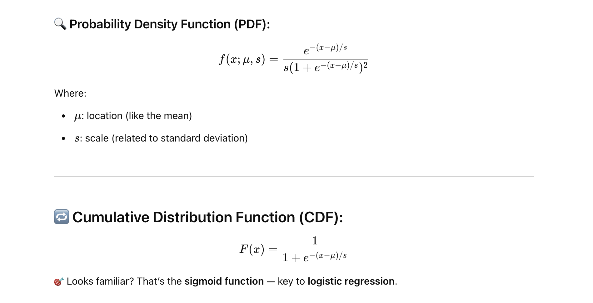
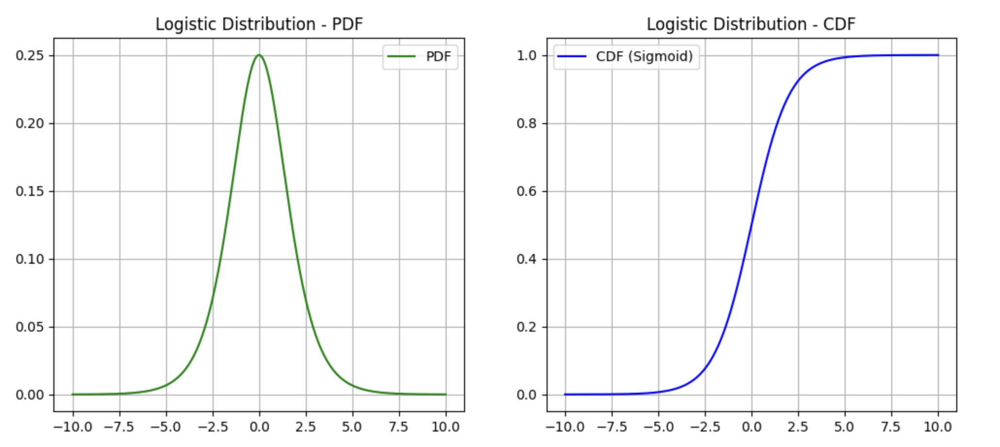

📐 What is the Logistic Distribution?#
The Logistic Distribution is a continuous probability distribution used for modeling growth and for classification problems.
Its shape is similar to the normal distribution — symmetric, bell-shaped — but with heavier tails.

✅ Real-World Use Cases#
- Logistic Regression (Binary Classification)
- 🎯 Models the probability that an output belongs to class 1 (vs class 0).
- Uses the sigmoid function (i.e., logistic CDF) to squash any real-valued input to a value between 0 and 1.
Example: Predicting whether an email is spam or not spam based on features like subject, sender, keywords, etc.
-
Neural Networks
- 🔁 Activation function like sigmoid uses the logistic distribution shape.
- 🧠 Used to map any value into a bounded range [0, 1].
-
Growth Models
- 📈 Population or disease spread modeling (e.g., COVID-19 curves).
- Logistic distribution is used when the rate of growth is proportional to both current value and remaining capacity.
-
Marketing & Adoption Rates
- 📊 Used in diffusion of innovation — how quickly people adopt new tech (like smartphones, electric cars).
- Shows slow start → rapid growth → saturation.
Example
import numpy as np
import matplotlib.pyplot as plt
from scipy.stats import logistic
x = np.linspace(-10, 10, 1000)
pdf = logistic.pdf(x, loc=0, scale=1)
cdf = logistic.cdf(x, loc=0, scale=1)
plt.figure(figsize=(12,5))
plt.subplot(1,2,1)
plt.plot(x, pdf, label='PDF', color='green')
plt.title("Logistic Distribution - PDF")
plt.grid(True)
plt.legend()
plt.subplot(1,2,2)
plt.plot(x, cdf, label='CDF (Sigmoid)', color='blue')
plt.title("Logistic Distribution - CDF")
plt.grid(True)
plt.legend()
plt.show()

🔄 Logistic vs Normal Distribution#
Feature Normal Logistic
PDF shape Bell-shaped Bell-shaped
Tails Light Heavier
CDF Error function Sigmoid function
ML use case Less in classification Logistic regression, sigmoid
Difference Between Logistic and Normal Distribution#
| Feature | Normal Distribution | Logistic Distribution |
|---|---|---|
| Shape | Bell-shaped, symmetric | Bell-shaped, symmetric |
| Tails | Lighter tails | Heavier tails |
| Peak | Sharper peak | Flatter peak |
| PDF (Probability Function) | Involves exponential and π | Involves exponential only |
| CDF | Error function | Sigmoid function |
| Common in | Natural phenomena, regression, hypothesis testing | Classification, logistic regression, neural nets |
| Use in ML | Assumes continuous output | Used when output is a probability (0–1) |
| Analytical Simplicity | Harder to compute CDF | Easier and faster (sigmoid) |
🧠 Real-World Use in AI/ML#
| Scenario | Best Fit Distribution | Why? |
|---|---|---|
| Predicting exam scores, height | Normal | Real-world values cluster around a mean |
| Classifying emails (spam/not) | Logistic | Probabilistic output between 0 and 1 |
| Modeling neural network activations | Logistic | Sigmoid is derived from logistic CDF |
| Forecasting disease spread | Logistic | Used in logistic growth curves |